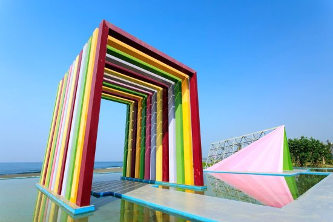

第二個景點-旗津
彩虹教堂
七彩的美麗教堂佇立於湛藍的海上，這裡是愛情的見證之地。
來到旗津很少人會來參觀貝殼館，但您不能不知道的是，今年夏天貝殼館已由高雄的婚紗業者承租，大手筆改造婚紗拍攝基地，
七彩繽紛的「彩虹教堂」座落於淺藍的天空與湛藍大海的美景之中，怎麼拍都好美～
ㄇ字型的教堂景觀相當特別，而一旁的三角造型的教堂則帶有濃濃的異國風情，交錯的鐵條造成的陰影效果非常別致，不同時間點來會有不同的光影變化。
「彩虹教堂」是免費的開放空間，非常歡迎民眾拍照打卡，分享旗津之美！

旗津貝殼館
黃金色的裝置藝術座落在海濱之上，外型有如巨大的耳朵聆聽海浪的潮起潮落，有人說，貝殼就有如海裡的耳朵，只要您將自己的耳朵湊上貝殼，就能聽到大海的聲聲呼喚…
來到高雄旅遊，旗津是許多人的必遊之地，騎著機車搭乘渡輪前往，交通很是便捷。
其中，旗津海岸公園近來增加了「黃金海珍珠」系列作品，成為旅遊新亮點！
由臺灣著名藝術家林舜龍先生，以及法國聲音藝術家葉澎生（Yannick Dauby）共同打造，共計六座公共藝術品散置在海岸林間，帶給民眾不同的「聆聽」體驗。
旗津貝殼博物館也位於旗津海岸公園內，是由高雄市民黃葛亮先生捐獻2600多種的貝類，供民眾免費入內參觀。
除了鸚鵡螺、龍宮貝等活化石，還有寶螺五大天王以及重達70公斤的二枚貝，藏量豐富多元，令人嘖嘖稱奇。
連到首頁
連到第3頁
連到第4頁
連到第5頁
連到第6頁